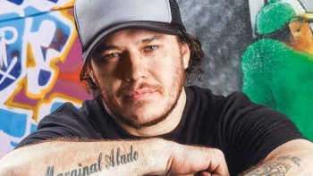

Chorão (Alexandre Magno Abrão) nasceu em São Paulo, no dia 09 de abril de 1970. O apelido surgiu quando era pequeno.
Sempre que não conseguia fazer as manobras mais difíceis no skate, chorava. Daí o apelido de “Chorão”, dado pelos amigos.
Chorão teve uma infância difícil, parou de estudar na sétima série. Na década de 80 atuou profissionalmente no skate, sendo vice-campeão paulista, na categoria freestyle.
Depois de substituir por acaso o vocalista de uma banda, Chorão foi convidado para fazer parte de uma banda. Só em 1992, junto com Champignon, Renato Pelado e, mais tarde, com Marcão e Thiago
completaram a primeira formação da banda que passou a se chamar Charlie Brown Jr. Por volta de 1992, começaram a tocar no circuito Santos e São Paulo, principalmente em campeonatos de skate.
Em 2005, após desentendimentos profissionais, alguns integrantes deixaram a banda, que passou a ter nova formação.
Triste com o fim da formação original da banda, o envolvimento de Chorão com drogas se agravou.
Só os loucos sabem
Lançada em 2009, a música "Só os loucos sabem" fez muito sucesso, e ainda faz nos apps de música!, chegando aos incríveis 165 milhões de views no Youtube
para ouvir, Clique aqui
Zóio de lula
Lançada em 1997, Zóio de lula fez um sucesso imenso, e mesmo após ser colocada no Youtube anos após ser lançada, ainda conseguiu chegar a marca de 43 milhões de acessos
para ouvir, clique aqui
Dias de luta, Dias de glória
Lançada em 2005, a música fez um sucesso estrondoso, tanto que, hoje, tendo apenas 2 anos de Youtube ela já passa dos 25 milhões de acessos
para ouvir, clique aqui
Para finalizar, a esposa do falecido cantor chorão fez um livro sobre a historia dela com o vocalista
o nome do livro é: Se não eu, quem vai fazer você feliz
para comprar, clique na foto do livro
obrigado por ter visto, caso queira saber a historia da banda "Racionais" basta clicar aqui.